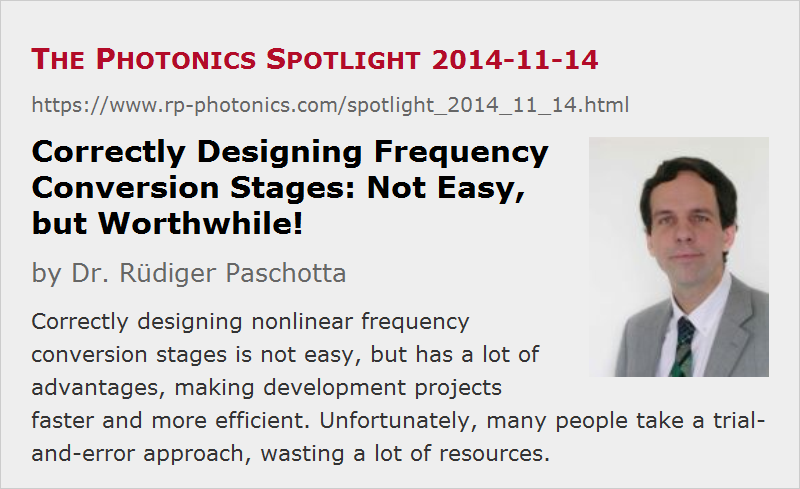

Correctly Designing Frequency Conversion Stages: Not Easy, but Worthwhile!
Posted on 2014-11-14 as a part of the Photonics Spotlight (available as e-mail newsletter!)
Permanent link: https://www.rp-photonics.com/spotlight_2014_11_14.html
Author: Dr. Rüdiger Paschotta, RP Photonics Consulting GmbH
Abstract: Correctly designing nonlinear frequency conversion stages is not easy, but has a lot of advantages, making development projects faster and more efficient. Unfortunately, many people take a trial-and-error approach, wasting a lot of resources.

Nonlinear frequency conversion is often used in laser technology – in conjunction with continuous-wave lasers and pulsed lasers. In similar ways as for lasers, the correct design of frequency conversion stages is essential: not only for obtaining the optimum power conversion efficiency, but also for preserving beam quality, achieving a sufficiently high lifetime of the nonlinear crystal material, etc. And indeed there are quite a few design details where the correct choice is certainly not obvious. In particular, you have to decide about what type and length of nonlinear crystal to use, what phase-matching configuration to employ (e.g. critical or noncritical?), how tightly the laser beam should be focused into the crystal, etc. For pulses, in particular for ultrashort pulses, a number of additional aspect comes into play; one may have to consider the phase-matching bandwidth or the group velocity mismatch or peak intensities in the context of possible laser-induced damage.
Surprisingly, however, a large percentage of people developing laser devices still use a trial-and-error approach:
- For example, they select a certain crystal simply because that material has been used successfully in another device, even though the circumstances are quite different.
- They would purchase dozens of crystals with a certain length, not knowing whether half the length (which certainly makes it much cheaper) would be sufficient or possibly even better.
- They would just take some curved mirror or lens to focus their laser beam into the crystal, neither knowing what size the beam waist will have, nor what value would be appropriate.
If the conversion efficiency appears to be satisfactory, they would conclude that it works and can be done that way. If the boss later asks for more conversion efficiency, they do not know whether it would be possible. How far the applied intensity levels are from the laser-induced damage threshold is another question they could not answer – although the boss would certainly want them to know that!
That style of working is nicely complemented by similar practices among those selling nonlinear crystal materials, for example. Often, they know little concerning the trade-offs between different materials (except that their material is best, of course!), have no justified idea concerning an optimum crystal length, etc. Effectively, they tell their buyers: “I don't know how that stuff really works; just buy it and try yourself!”
Quite obviously, this is not the recommended way of working in a high-tech area like photonics. It is highly inefficient, possibly leading to poor performance, unnecessary cost for materials and parts, time-consuming problems with optical damage, etc. But why are people working like this? Possibly just because they cannot do it better, and believe that they could not do it better. Learning often does not appear to be a contemplated option.
Admittedly, there is no fast way of learning all this. One first needs to acquire a thorough understanding of the underlying physics, including the knowledge of calculating details such as phase-matching angles, intensity-dependent conversion efficiencies and the like. In addition, one needs to get familiar e.g. with the typical trade-offs between different phase-matching configurations and the typical pros and cons of tight focusing into nonlinear crystals. Finally, one also requires some amount of experience e.g. in order to notice that certain degradation phenomena have to be observed when using particular nonlinear crystal materials.
When learning all this just for using it once for the design of a device, the amount of work required may be out of proportion. However, when somebody at a company regularly designs such devices, that investment into solid know-how will certainly pay off. And if a company does not often uses that sort of expertise, the straightforward solution is to employ an expert as an external technical consultant for getting this work done properly. Note that paying such an expert for just a few hours of work is nothing compared to what you can waste when trying silly things in the lab.
By the way, I will present a one-day course on Applied Nonlinear Frequency Conversion at Photonics West (San Francisco) on February 9, 2015. This would be an excellent opportunity for many to get an easy introduction into that technical area. Those already knowing the basics can still learn a lot in this course.
Besides, I'm also offering tailored staff training courses, performed at my customer's premises. That way, a whole team may learn a lot of things within just two or three days, for example
This article is a posting of the Photonics Spotlight, authored by Dr. Rüdiger Paschotta. You may link to this page and cite it, because its location is permanent. See also the RP Photonics Encyclopedia.
Note that you can also receive the articles in the form of a newsletter or with an RSS feed.
Questions and Comments from Users
Here you can submit questions and comments. As far as they get accepted by the author, they will appear above this paragraph together with the author’s answer. The author will decide on acceptance based on certain criteria. Essentially, the issue must be of sufficiently broad interest.
Please do not enter personal data here; we would otherwise delete it soon. (See also our privacy declaration.) If you wish to receive personal feedback or consultancy from the author, please contact him e.g. via e-mail.
By submitting the information, you give your consent to the potential publication of your inputs on our website according to our rules. (If you later retract your consent, we will delete those inputs.) As your inputs are first reviewed by the author, they may be published with some delay.
|  |
If you like this page, please share the link with your friends and colleagues, e.g. via social media:
These sharing buttons are implemented in a privacy-friendly way!